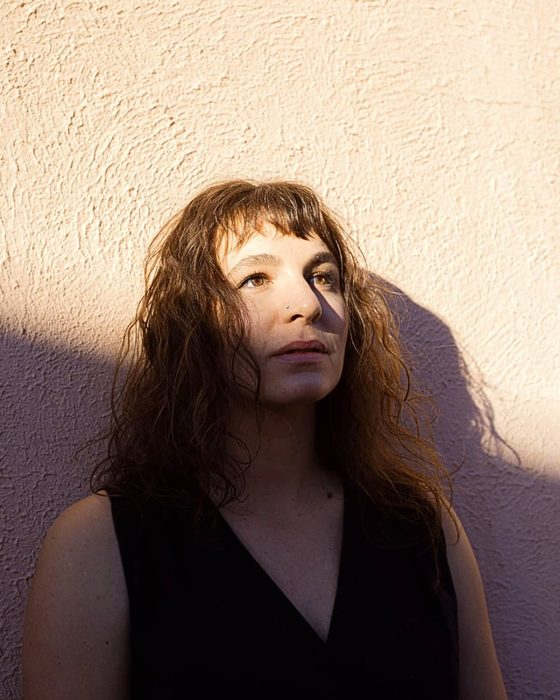

I'm a cognitive & computational linguist, NLP researcher, and aspiring Tech Bro. My interests include embodied human languge and tech-facing product work. My current research focuses on LLM interpretability.
Previously, I worked for the CLEAR Lab at CU Boulder. Before that I was a Massage Therapist, business owner/founder, and bodywork instructor. I'm advised by Alexis Palmer.
Expected Dec 2026 - MA in Linguistics & a Certificate in Human Languge Technology.
Dec 2025 - Graduated with a Bachelor of Arts in Cognitive Linguistics & a Certificate in Cognitive Science, GPA 3.9, Magna Cum Laude.
April 2025 - Accepted to the BAM (Bachelors Accelerated Masters) program, in the Department of Linguistics.
Jan 2024 - Accepted to the Cognitive Linguistics program at CU Boulder.
March 2023 - Accepted the Rising Star Award. For innovative entrepreneurship and community impact through small business.
Jan 2016 - Feb 2024 - Built, ran and sold my massage and bodywork practice.